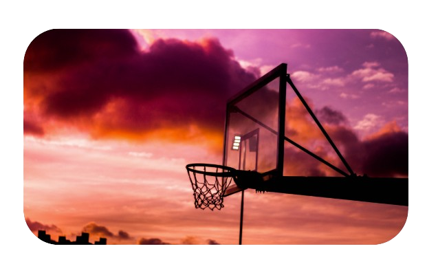
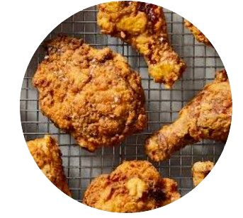
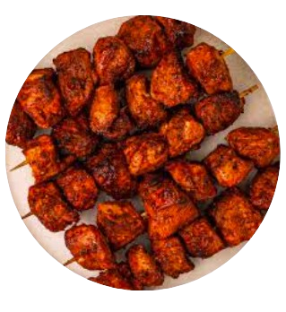
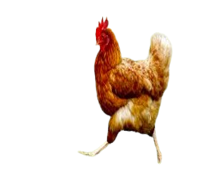
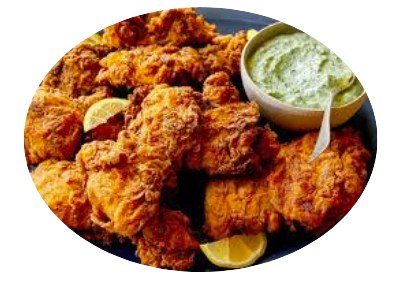
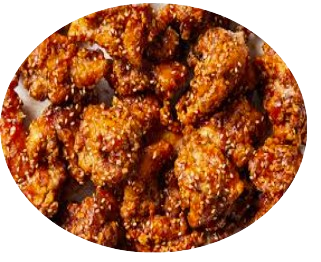
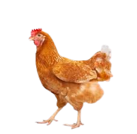
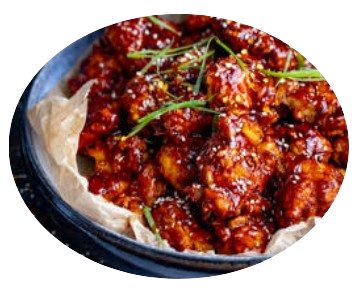
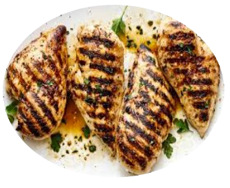

| HOME | MY INTERESTS | MY PORTFOLIO | PHOTOS | CONTACT ME |
The first one is yoga. It is perhaps one of my most beneficial hobbies.
|
|  | My second hobby is to play basketball. |
When I am really bored I enjoy reading books. |
When I'm not reading books, the next thing I do is |
|         |
Another interest of mine is chicken!
|